Diatom analysis
Contents
Diatom analysis¶
See https://www.nature.com/articles/s41524-019-0202-3:
Deep data analytics for genetic engineering of diatoms linking genotype to phenotype via machine learning, Artem A. Trofimov, Alison A. Pawlicki, Nikolay Borodinov, Shovon Mandal, Teresa J. Mathews, Mark Hildebrand, Maxim A. Ziatdinov, Katherine A. Hausladen, Paulina K. Urbanowicz, Chad A. Steed, Anton V. Ievlev, Alex Belianinov, Joshua K. Michener, Rama Vasudevan, and Olga S. Ovchinnikova.
%matplotlib inline
%config InlineBackend.figure_format = 'retina'
import matplotlib.pyplot as plt
import numpy as np
# Set up matplotlib defaults: larger images, gray color map
import matplotlib
matplotlib.rcParams.update({
'figure.figsize': (10, 10),
'image.cmap': 'gray'
})
from skimage import io
image = io.imread('../data/diatom-wild-032.jpg')
plt.imshow(image);
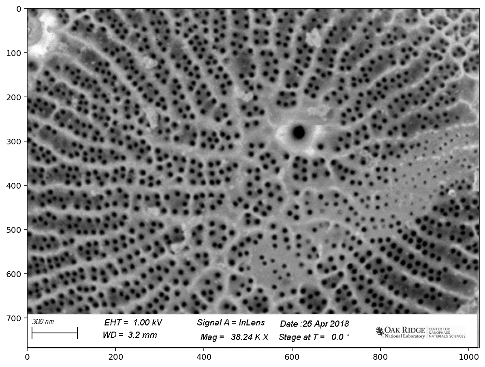
pores = image[:690, :]
plt.imshow(pores);
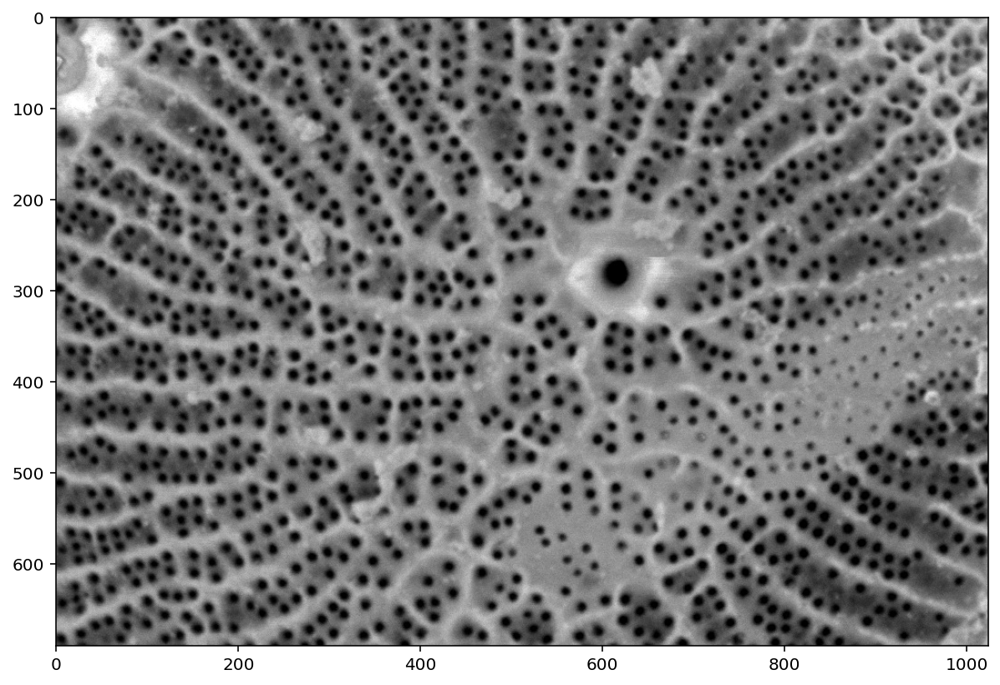
from scipy import ndimage as ndi
from skimage import util
denoised = ndi.median_filter(util.img_as_float(pores), size=3)
plt.imshow(denoised);
from skimage import exposure
pores_gamma = exposure.adjust_gamma(denoised, 0.7)
plt.imshow(pores_gamma);
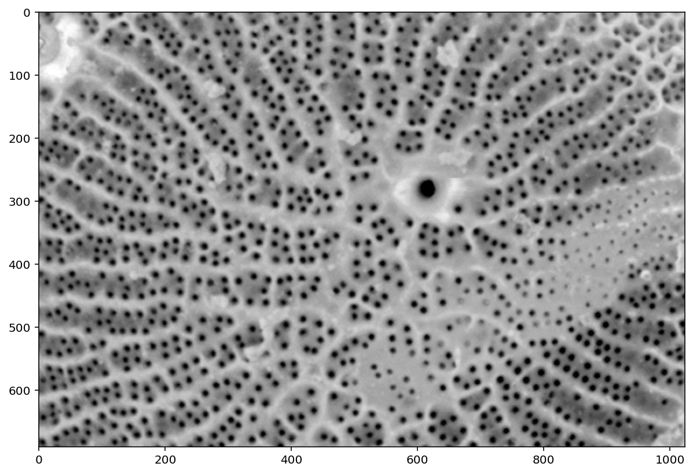
pores_inv = 1 - pores_gamma
plt.imshow(pores_inv);
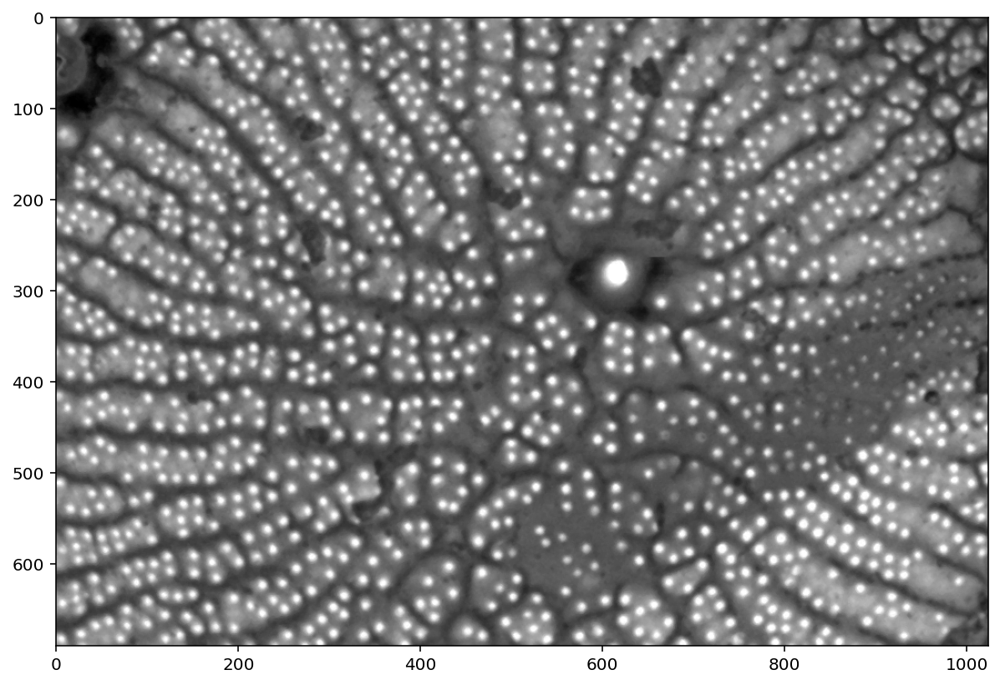
# This is the problematic part of the manual pipeline: you need
# a good segmentation. There are algorithms for automatic thresholding,
# such as `filters.otsu` and `filters.li`, but they don't always get the
# result you want.
t = 0.325
thresholded = (pores_gamma <= t)
plt.imshow(thresholded);
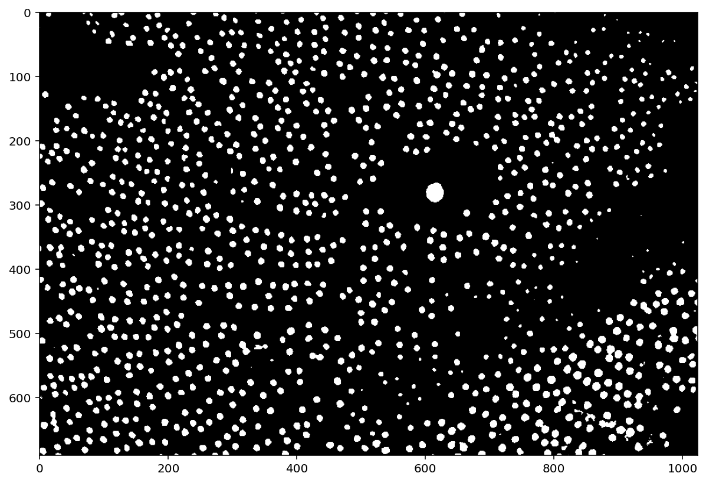
from skimage import filters
filters.try_all_threshold(pores_gamma, figsize=(15, 20));
skimage.filters.thresholding.threshold_isodata
skimage.filters.thresholding.threshold_li
skimage.filters.thresholding.threshold_mean
skimage.filters.thresholding.threshold_minimum
skimage.filters.thresholding.threshold_otsu
skimage.filters.thresholding.threshold_triangle
skimage.filters.thresholding.threshold_yen
from skimage import segmentation, morphology, color
distance = ndi.distance_transform_edt(thresholded)
plt.imshow(exposure.adjust_gamma(distance, 0.5))
plt.title('Distance to background map');
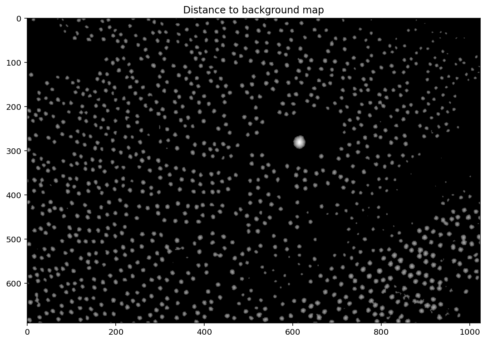
local_maxima = morphology.local_maxima(distance)
fig, ax = plt.subplots(figsize=(20, 20))
maxi_coords = np.nonzero(local_maxima)
ax.imshow(pores);
plt.scatter(maxi_coords[1], maxi_coords[0]);
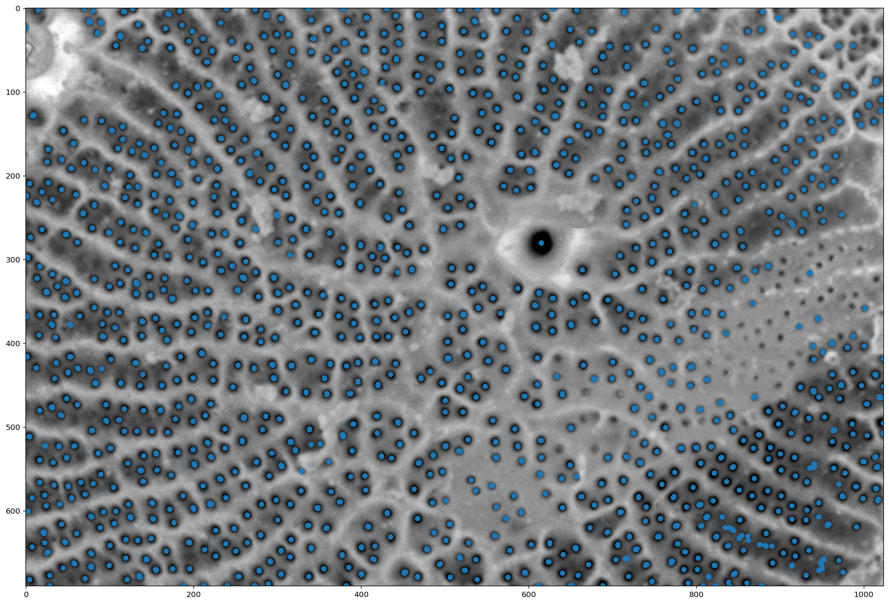
# This is a utility function that we'll use for display in a while;
# you can ignore it for now and come and investigate later.
def shuffle_labels(labels):
"""Shuffle the labels so that they are no longer in order.
This helps with visualization.
"""
indices = np.unique(labels[labels != 0])
indices = np.append(
[0],
np.random.permutation(indices)
)
return indices[labels]
markers = ndi.label(local_maxima)[0]
labels = segmentation.watershed(denoised, markers)
f, (ax0, ax1, ax2) = plt.subplots(1, 3, figsize=(20, 5))
ax0.imshow(thresholded)
ax1.imshow(np.log(1 + distance))
ax2.imshow(shuffle_labels(labels), cmap='magma');
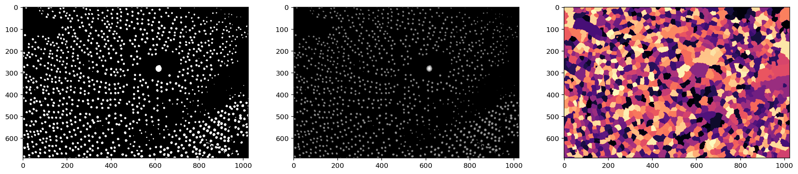
labels_masked = segmentation.watershed(thresholded, markers, mask=thresholded, connectivity=2)
f, (ax0, ax1, ax2) = plt.subplots(1, 3, figsize=(20, 5))
ax0.imshow(thresholded)
ax1.imshow(np.log(1 + distance))
ax2.imshow(shuffle_labels(labels_masked), cmap='magma');
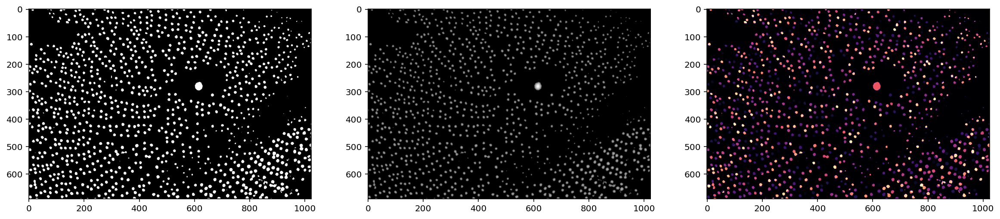
from skimage import measure
contours = measure.find_contours(labels_masked, level=0.5)
plt.imshow(pores)
for c in contours:
plt.plot(c[:, 1], c[:, 0])
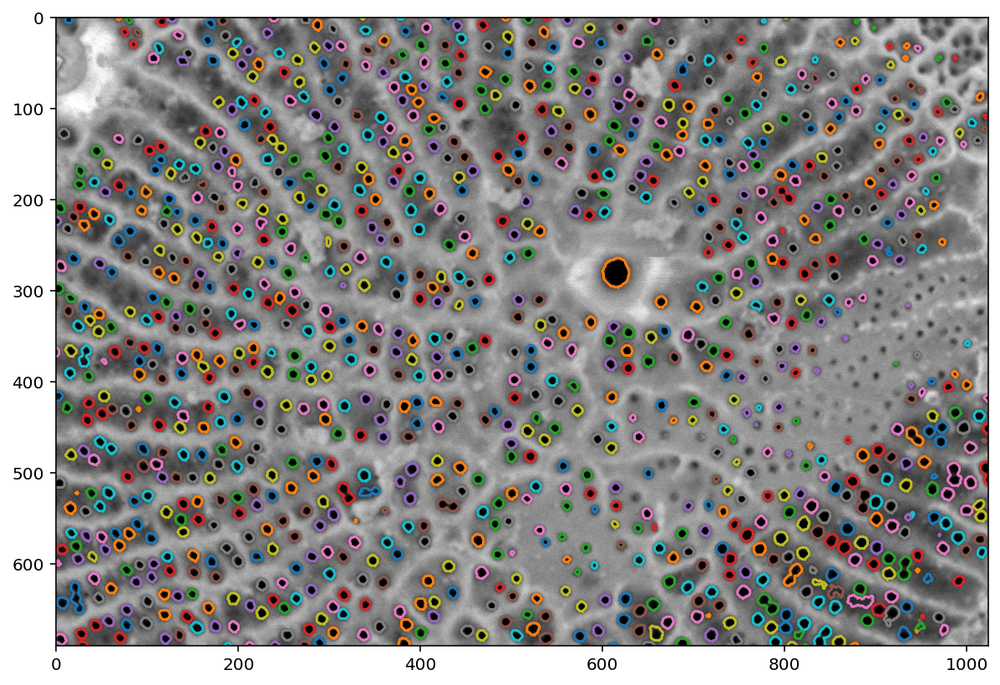
regions = measure.regionprops(labels_masked)
f, ax = plt.subplots(figsize=(10, 3))
ax.hist([r.area for r in regions], bins=100, range=(0, 200));
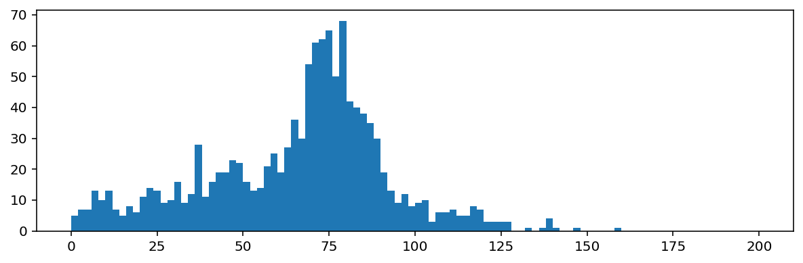
from keras import models, layers
from keras.layers import Conv2D, MaxPooling2D, UpSampling2D
M = 76
N = int(23 / 76 * M) * 2
model = models.Sequential()
model.add(
Conv2D(
32,
kernel_size=(2, 2),
activation='relu',
input_shape=(N, N, 1),
padding='same'
)
)
model.add(MaxPooling2D(pool_size=(2, 2)))
model.add(Conv2D(64, (3, 3), activation='relu', padding='same'))
model.add(Conv2D(64, (3, 3), activation='relu', padding='same'))
model.add(UpSampling2D(size=(2, 2)))
model.add(
Conv2D(
1,
kernel_size=(2, 2),
activation='sigmoid',
padding='same'
)
)
model.compile(loss='mse', optimizer='Adam', metrics=['accuracy'])
# Load pre-trained weights from disk
model.load_weights('../data/keras_model-diatoms-pores.h5')
---------------------------------------------------------------------------
ModuleNotFoundError Traceback (most recent call last)
Input In [23], in <module>
----> 1 from keras import models, layers
2 from keras.layers import Conv2D, MaxPooling2D, UpSampling2D
4 M = 76
ModuleNotFoundError: No module named 'keras'
shape = np.array(pores.shape)
padded_shape = (np.ceil(shape / 46) * 46).astype(int)
delta_shape = padded_shape - shape
padded_pores = np.pad(
pores,
pad_width=[(0, delta_shape[0]), (0, delta_shape[1])],
mode='symmetric'
)
blocks = util.view_as_blocks(padded_pores, (46, 46))
B_rows, B_cols, _, _ = blocks.shape
tiles = blocks.reshape([-1, 46, 46])
# `predict` wants input of shape (N, 46, 46, 1)
tile_masks = model.predict_classes(tiles[..., np.newaxis])
print(tile_masks.shape)
tile_masks = tile_masks[..., 0].astype(bool)
print(tile_masks.shape)
nn_mask = util.montage(tile_masks, grid_shape=(B_rows, B_cols))
nn_mask = nn_mask[:shape[0], :shape[1]]
plt.imshow(nn_mask);
contours = measure.find_contours(nn_mask, level=0.5)
plt.imshow(pores)
for c in contours:
plt.plot(c[:, 1], c[:, 0])
nn_regions = measure.regionprops(
measure.label(nn_mask)
)
f, ax = plt.subplots(figsize=(10, 3))
ax.hist([r.area for r in regions], bins='auto', range=(0, 200), alpha=0.4, label='Classic')
ax.hist([r.area for r in nn_regions], bins='auto', range=(0, 200), alpha=0.4, label='NN')
ax.legend();
Bonus round: region filtering¶
def is_circular(regions, eccentricity_threshold=0.1, area_threshold=10):
"""Calculate a boolean mask indicating which regions are circular.
Parameters
----------
eccentricity_threshold : float, >= 0
Regions with an eccentricity less than than this value are
considered circular. See `measure.regionprops`.
area_threshold : int
Only regions with an area greater than this value are considered
circular.
"""
return np.array([
(r.area > area_threshold) and
(r.eccentricity <= eccentricity_threshold)
for r in regions
])
def filtered_mask(mask, regions, eccentricity_threshold, area_threshold):
mask = mask.copy()
suppress_regions = np.array(regions)[
~is_circular(
regions,
eccentricity_threshold=eccentricity_threshold,
area_threshold=area_threshold
)
]
for r in suppress_regions:
mask[tuple(r.coords.T)] = 0
return mask
plt.imshow(filtered_mask(nn_mask, nn_regions,
eccentricity_threshold=0.8,
area_threshold=20));
contours = measure.find_contours(
filtered_mask(nn_mask, nn_regions,
eccentricity_threshold=0.8,
area_threshold=20),
level=0.5
)
plt.imshow(pores)
for c in contours:
plt.plot(c[:, 1], c[:, 0])
filtered_regions = np.array(nn_regions)[is_circular(nn_regions, 0.8, 20)]
f, ax = plt.subplots(figsize=(10, 3))
ax.hist([r.area for r in filtered_regions], bins='auto', range=(0, 200), alpha=0.4);